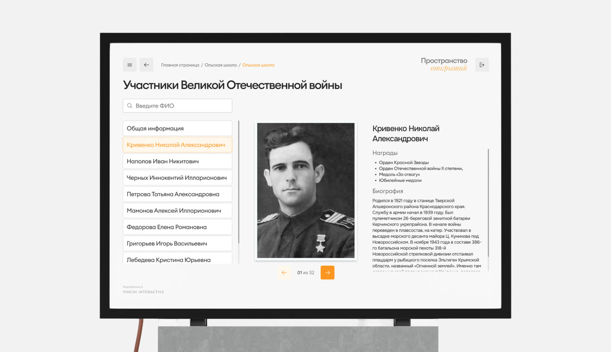
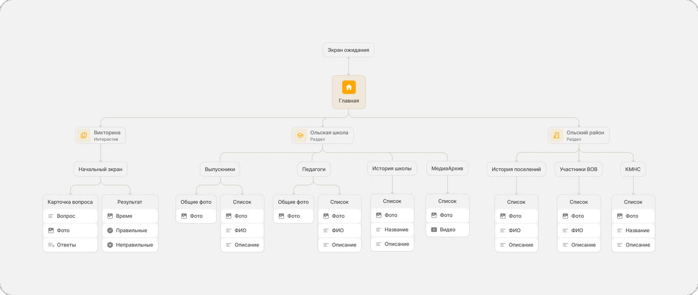
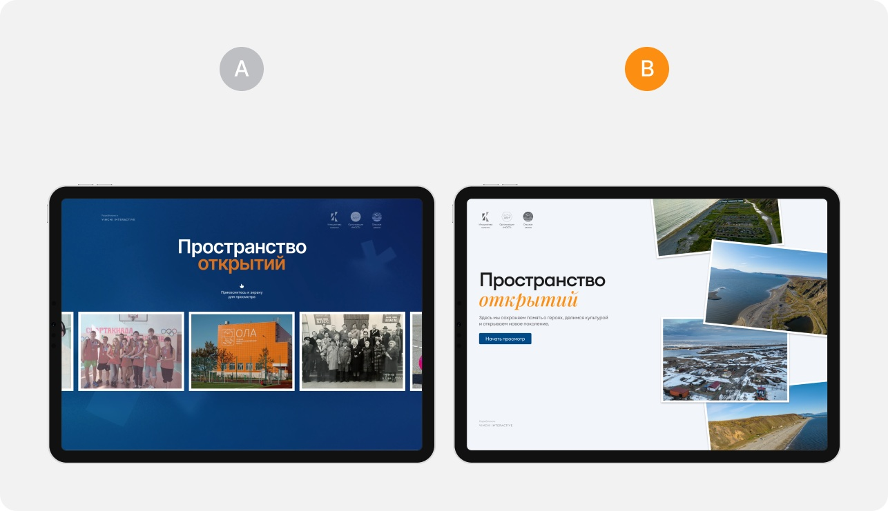
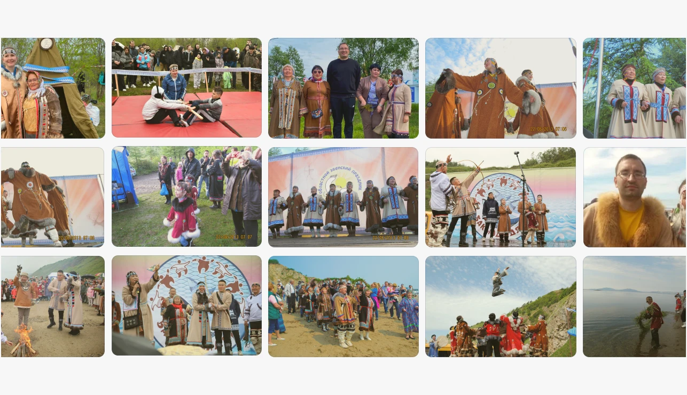
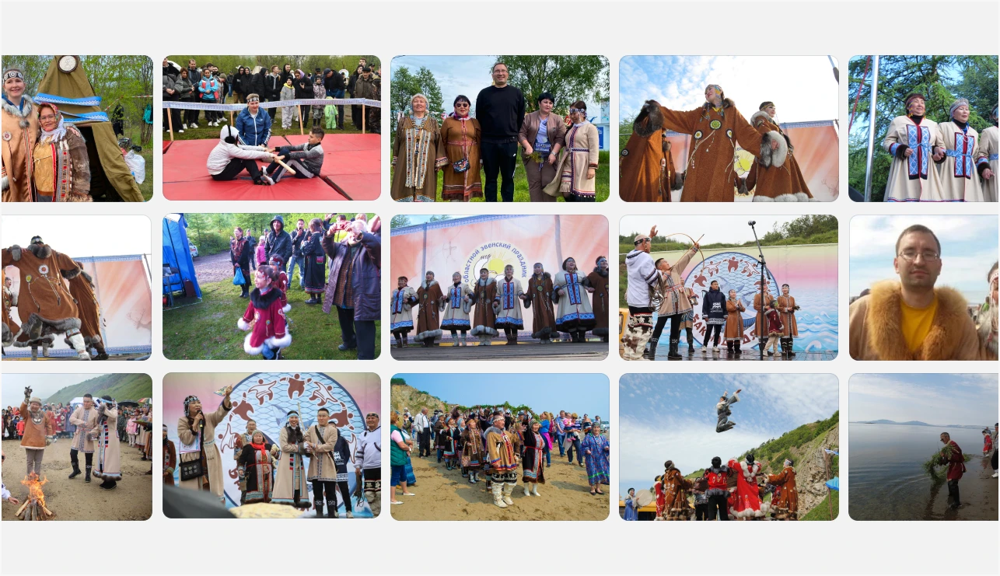
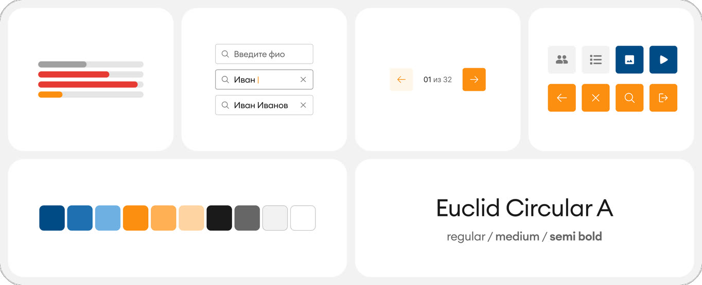

Интерактивное приложение
для сенсорного стола Vinchi Era

Интерактивный цифровой архив истории района для сенсорного стола в школе посёлка Ола Магаданской области: ветераны ВОВ, коренные народы Севера, история поселений, выпускники и педагоги, викторина.
Карта приложения
Сначала я построил MindMap всего приложения: разделы, уровни вложенности, типы контента, точки поиска и навигации. Согласование с агентством до старта проектирования сняло крупные переделки на поздних этапах.

Раздел «История школы» оказался самым сложным структурно - разношёрстный контент разных эпох без очевидной логики группировки.
После анализа предложил делить по хронологии:
XX век → XXI век → наши дни. Решение приняли.
Ограничения, с которыми столкнулся
Изучил принципы, которые принципиально отличают киоск-интерфейс от веб или мобильного:
На экране 3840×2160 px при ширине 536 мм палец (~12 мм) требует элементов не меньше 80–100 px.
Пользователь стоит в 80–120 см от экрана, поэтому шрифты и зоны взаимодействия крупнее, чем в вебе.
Контент, доступный по наведению курсора, потерян: каждое действие должно быть явным - видимые кнопки и предсказуемый результат касания.
Выбор стилистики
Агентство попросило не прорабатывать логику, а показать заказчику два разных визуальных направления:

В обоих случаях предложил лёгкую анимацию векторных элементов
Гипотезы и решения
Три решения, которые я предложил сам и которые вошли в итоговый макет. Стенд работает без аналитики, поэтому это гипотезы, обоснованные ограничениями киоска. Как бы я их проверил, написано в конце блока.
Раздел №1. Поиск внутри каждого раздела, а не по всему архиву
Агентство предлагало сделать один общий поиск по приложению: так его проще связать с админкой. Но в архиве несколько разделов с людьми: ветераны ВОВ, педагоги, выпускники. При общем поиске по фамилии в выдаче окажутся люди из всех разделов вперемешку.
Гипотеза
Если поиск живёт внутри раздела, человек быстрее находит нужного ветерана или учителя, потому что контекст поиска уже задан выбором раздела.
Решение
Поиск в контексте раздела
- Поле «Введите ФИО» стоит над списком в каждом разделе с персоналиями
- Результаты фильтруют список прямо на экране: список слева, карточка выбранного человека справа, без перехода на отдельную страницу выдачи
- В выдаче только люди этого раздела, так что поиск учителя не вернёт ветерана с той же фамилией
Раздел №2. Клавиатура: эргономичная раскладка вместо плоской QWERTY
Во всех проектах агентства на сенсорных столах стояла стандартная плоская клавиатура. Но здесь пользователь стоит в 80–120 см от экрана шириной больше полуметра, набирает текст пальцем без тактильной отдачи и не может опустить взгляд на клавиши, как на ноутбуке.
Гипотеза
Если раскладка подстроена под руки стоящего человека, ему удобнее набирать и проще ориентироваться в клавишах, а значит, поиск реже бросают на середине ввода.
Решение
Вместо одной длинной строки клавиш - эргономичная раскладка, удобная для набора двумя руками стоя.
Раздел №3. Прогресс с цветовой индикацией вместо отсчёта секунд в Викторине
На ответ отводится ограниченное время. Первоначальная идея - обратный отсчёт цифрами с полосой тайминга. Но на большом экране цифры отсчёта перетягивают внимание с вопроса и фотографии.
Гипотеза
Если время показано спокойным прогрессом, а тревожный сигнал появляется только в конце, посетитель читает вопрос, а не следит за секундами, и чаще доходит до конца викторины.
Решение
Прогресс-бар с цветовой индикацией:
- Таймер - полоса прогресса над вопросом. Она краснеет, только когда время подходит к концу
- Кнопка «Следующий вопрос» появляется только после ответа, поэтому её нельзя нажать случайно
- Если время вышло, полоса сменяется надписью «Время закончилось» и подсвечивается правильный ответ
Ретушь 1200+ фотографий
Сканы советских фотографий, снимки со стендов, картинки из старых презентаций, всё это необходимо было восстановить.
Цветокоррекцию правил вручную, а удаление водяных знаков и обрезку фотографий автоматизировал с помощью AI-инструментов.


Использовал связку Photoshop → Claude
UI-кит и передача в разработку
Чтобы ускорить и упростить работу разработки, я собрал интерфейс в единую систему внутри Figma. Все элементы были переведены на компоненты, токены и переиспользуемые паттерны.

Результаты
- Спроектировал структуру и все экраны приложения: 50+ экранов, включая состояния и крайние сценарии.
- Подготовил два стилевых концепта, заказчик выбрал второй, и на нём построен весь проект.
- Предложил три решения, которые вошли в итоговый макет: поиск внутри разделов, эргономичную клавиатуру и прогресс с цветовой индикацией в викторине.
- Собрал UI-кит на переменных и компонентах и подготовил файл к передаче в разработку, включая бесшовную карусель, готовую к выгрузке.
- Восстановил 1200+ архивных фотографий: разделил групповые сканы, выровнял портреты по глазам, выпрямил здания, сделал цветокоррекцию обложек.
КомментарийРабота выполнена оперативно и качественно